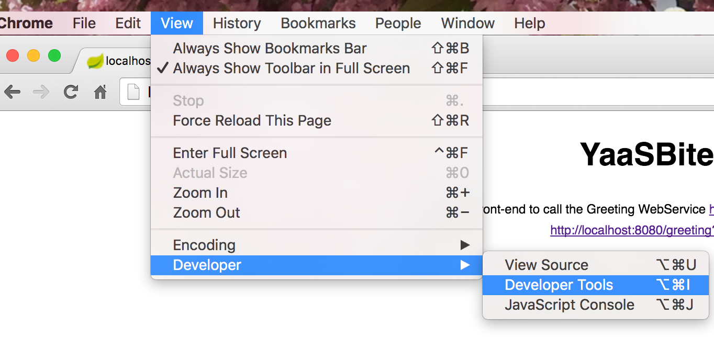
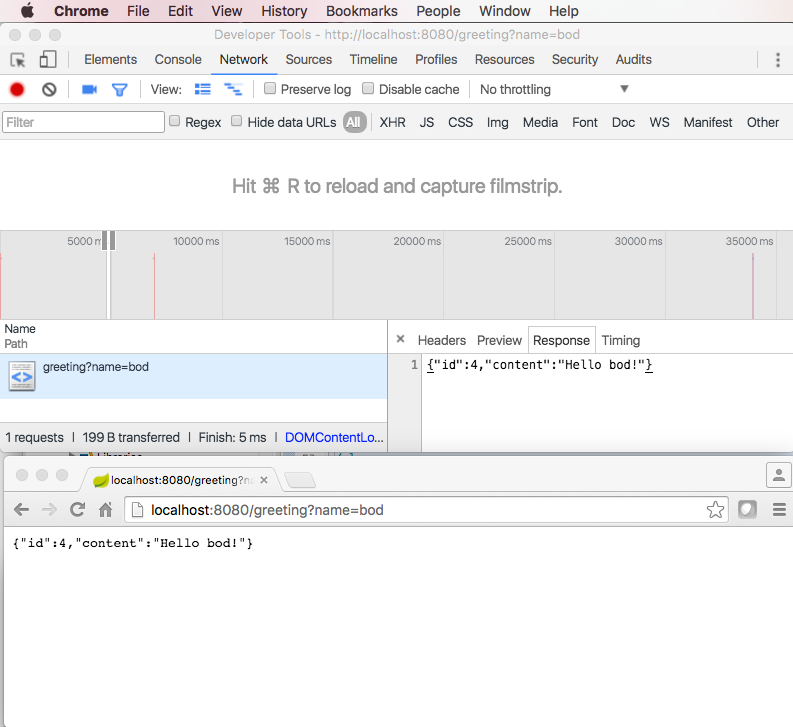

YaaSBites1
A tiny web-service from YaaSBite1 @ YaaSBites
Open this page in a Chrome Browser, and open Chrome's Developer Tools from inside Chrom: (View | Developer | DeveloperTools), then
watch and understand the REST traffic that occurs when you visit
/greeting and
/greeting?name=bod

